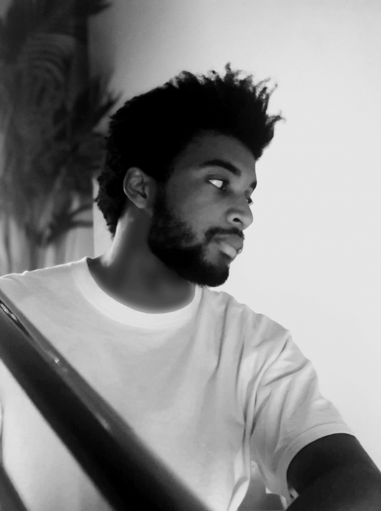

|
Irwan Bello
Hi! I'm an AI researcher living in SF and part of the founding team at Character.
[Character]
Building the next-generation of open-ended dialog agents. Stay tuned for upcoming news.
[Google Brain]
I spent 5.5 years as a Research Scientist at Google Brain working on Artificial Intelligence, Large Language Models (LLMs) and Computer Vision.
- LLMs -
My research focused on making large language models cheaper to work with - via sparsity, adaptive computation and better distributed computing infrastructure.
- Computer Vision -
I authored some of the pioneering work on Attention for Vision, notably training the first ever fully-attentional vision model.
I proposed LambdaNetworks as a faster alternative which resulted in 4-10x speed-ups over the prior state-of-the-art.
I also worked on simple baselines for image classification and video classification.
In the past, I proposed
Neural Combinatorial Optimization with applications to
AutoML and
Ranking.
I also contributed to Google products such as AutoML, MuM and Youtube.
[Stanford] Before Google, I spent wonderful years at Stanford as a grad student between the stats and the CS departments, after obtaining my M.S in Applied Math at Ecole Centrale Paris.
[AI & Startups] I advise a few select AI startups with a focus on LLMs and their applications (reach out if you're interested!).
[Talks & Press]
|

|
|
Research
Representative papers are highlighted.
|
|
ST-MoE: Designing Stable and Transferable Sparse Expert Models
Barret Zoph*, Irwan Bello*, Sameer Kumar, Nan Du, Yanping Huang, Jeff Dean, Noam Shazeer, William Fedus*.
Sparse Mixture of Experts (MoE) suffer from training instabilities and finetuning issues at scale.
We design improved methods for modeling, pretraining and finetuning sparse models.
We introduce the Stable and Transferable Mixture-of-Experts (ST-MoE) and scale it to 269B sparse parameters - the largest sparse encoder-decoder model ever trained.
Our largest model, ST-MoE-32B sets a new state-of-the-art on many NLP benchmarks including SuperGLUE and ARC Easy / ARC Challenge.
|
|
Revisiting 3D ResNets for Video Recognition
Xianzhi Du, Yeqing Li, Yin Cui, Rui Qian, Jing Li, Irwan Bello.
3D ResNet-RS, obtained through improved training and scaling strategies, achieves competitive performance on Kinetics and a large Web Video Text dataset.
|
|
Revisiting ResNets: Improved Training and Scaling Strategies [Neurips 2021 Spotlight]
Irwan Bello, William Fedus, Xianzhi Du, Ekin D. Cubuk, Aravind Srinivas, Tsung-Yi Lin, Jonathon Shlens, Barret Zoph.
[Github]
[Google Cloud]
[Blog posts 1,
2,
3]
This paper disentangles the impact of architectures vs training and scaling - revealing that improvements in image classification have been primarily driven by improved training and scaling.
Identifies general scaling strategies that improve vision models across training setups and introduces SOTA competitive ResNet-RS.
The training and scaling strategies have been used in multiple recent architectures
[1,
2,
3]
and the work has inspired follow-up research on scaling and regularizing architectures, e.g.
RetinaNet-RS,
3D-ResNet-RS.
|
|
LambdaNetworks: Modeling Long-Range Interactions without Attention [ICLR 2021 Spotlight]
Irwan Bello.
[Github]
[Yannic Kilcher's review]
[London ML Meetup talk]
[Blog posts 1,
2,
3]
This paper sits at the intersection of linear attention and fully-attentional vision models (concurrent to Vision Transformers).
Introduces lambda layers: a scalable alternative to self-attention.
Similar to linear attention, lambda layers bypass expensive attention maps, but in contrast, they model both content and position-based interactions which enables their application to large structured inputs.
LambdaResNets are 3.2 - 4.4x faster than EfficientNets in supervised learning, and ~9x than EfficientNet and ViT in large-scale semi-supervised learning.
|
|
Global Self-Attention Networks for Image Recognition
Irwan Bello*, Zhuoran Shen*, Raviteja Vemulapalli, Xuhui Jia, Ching-Hui Chen.
Combining linear attention and axial attention yields an attention mechanism that can efficiently attend to higher resolution images.
|
|
Stand-alone Self-Attention in Vision Models
Prajit Ramachandran*, Niki Parmar*, Ashish Vaswani*, Irwan Bello, Anselm Levskaya, Jonathon Shlens.
[NeurIPS 2019]
Study of fully atttentional networks on image classification and object detection.
A simple procedure of replacing all spatial convolutions with self-attention in ResNets produces a fully self-attentional model that outperforms its convolutional counterpart on image classification and object detection, while being more computationally efficient.
These results establish that stand-alone self-attention is an important addition to the vision practitioner's toolbox.
|
|
Attention Augmented Convolutional Networks
Irwan Bello, Barret Zoph, Ashish Vaswani, Jonathon Shlens, Quoc Le.
[ICCV 2019]
Trained the first fully attentional image classifier and showed that self-attention is a competitive replacement to convolutions for image classification.
Hybrid architectures which combine self-attention and convolution yields sizable improvements on image classification and object detection.
|
|
Seq2slate: Re-ranking and Slate Optimization with RNNs
Irwan Bello, Sayali Kulkarni, Sagar Jain, Craig Boutilier, Ed Chi, Elad Eban, Xiyang Luo, Alan Mackey, Ofer Meshi.
Learning to rank with Pointer Networks outperforms pointwise, pairwise and listwise ranking baselines on academic datasets and in offline experiments.
|
|
Backprop Evolution
Maximilian Alber*, Irwan Bello*, Barret Zoph, Pieter-Jan Kindermans, Prajit Ramachandran, Quoc Le.
Starting from random or known propagation rules, evolution searches for backpropagation variants that maximize generalization performance.
|
|
Neural Optimizer Search with Reinforcement Learning
Irwan Bello*, Barret Zoph*, Vijay Vasudevan, Quoc Le.
[ICML 2017]
[Google AI blogpost]
Automated discovery of optimization methods by generating update rules with an RL-trained controller.
Discovered two new optimizers and learning rate schedules which experimentally lead to faster convergence in image classification and machine translation.
|
|
Neural Combinatorial Optimization with Reinforcement Learning
Irwan Bello*, Hieu Pham*, Quoc Le, Mohammad Norouzi, Samy Bengio.
A framework to tackle combinatorial optimization problems using neural networks and reinforcement learning.
It has since been the topic of a course by William J Cook and been applied to
Vehicle Routing,
3D Bin Packing,
Device Placement,
E-Commerce Search Engine Ranking
|
|
{kind=link}